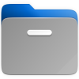
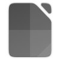
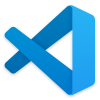
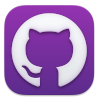
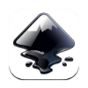
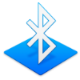

COMPUTADORA
La Computadora de Casa Lipari usa el sistema operativo Ubuntu (Linux), el uso es casi idéntico a una computadora Windows, sin embargo hay ciertas distinciones que hay que hacer notar.
Teclado
La principal diferencia en el teclado para las computadoras con sistema operativo Linux es el botón de Windows, en estos sistemas, este botón se denomina "super", en el caso particular de Ubuntu este botón va a mostrar una visualización de todas las ventanas abiertas, un area de búsqueda para aplicaciones y la barra de aplicaciones llamada dock, para regresar de esa pantalla se puede seleccionar con el mouse la ventana que se quiera utilizar, presionar de nuevo la tecla "super", presionar la tecla "escape" o dar click en el botón de ubuntu en la parte inferior derecha de la pantalla.
La segunda diferencia en el uso del teclado en Linux es el simbolo de arroba (@), en Linux el arroba se obtiene presionando la tecla "Alt Gr" (ubicada a la derecha de la tecla espacio) y el numero 2.
Software
La computadora esta lista para ser usada para trabajo y entretenimiento.
Es una maquina de bajo consumo de energía y perfil minimalista, por lo tanto no esta hecha para trabajo pesado, sin embargo puede ser utilizada para trabajar y jugar sin problemas.
Archivos
El equivalente al navegador de archivos de Windows, es la aplicacion de gestion de archivos de Ubuntu.

Navegadores
Mozilla Firefox, Google Chrome y Microsoft Edge son los Navegadores de Internet, cada navegador ya esta configurado con los sitios de streaming para su comodidad.
Firefox es, por default, el Navegador Principal.
Steam
Steam es una plataforma digital de Videojuegos. La maquina tiene algunos juegos simples instalados para que pueda jugar, le recordamos que esta no es una maquina poderosa de juegos, pero es capaz de ejecutar sin problemas los juegos que tiene instalados.
Cider
Cider es el programa que accesa al servicio de Streaming de Música de Apple, cuenta con mas de 70 millones de canciones, estaciones de radio y conciertos en vivo. Todas las transmisiones de Apple Music se hacen en formato de alta calidad (Lossless 24-bit/44.1 kHz ALAC).
VLC
VLC es reproductor multimedia multiplataforma de código abierto y libre que reproduce la mayoría de archivos multimedia, así como DVD, Audio CD, VCD y diversos protocolos de transmisión.
Editor de Texto
El editor de texto es una pequeña pero poderosa aplicacion de procesamiento de textos, maneja los formatos de texto simple (txt) y texto enriquecido (rtf). cuenta con un corrector ortografico nativo, permite el uso de tablas, imagenes, y reconoce lenguajes simples de programacion.
Visor de Imagenes
El Visor de Imagenes es una pequeña aplicacion para ver imagenes, es capaz incluso de abrir archivos con formatos exoticos como RAW e imagenes compuestas.
LibreOffice
LibreOffice es una poderosa suite de oficina, compatible y técnicamente identico a Office en Windows. LibreOffice incorpora varias aplicaciones: Writer, el procesador de textos, Calc, la hoja de cálculos, Impress, el editor de presentaciones, Draw, nuestra aplicación de dibujo y diagramas de flujo, Base, nuestra base de datos e interfaz con otras bases de datos, y Math para la edición de fórmulas matemática.

VSCode
Visual Studio Code es el editor de texto especializado en el desarrollo mas popular del mercado, tiene la flexibilidad de editar un solo archivo simple, y hasta convertirse en un verdadero ambiente independiente de desarrollo, cuenta con poderosos plug-ins para entender y manipular casi cualquier tipo de archivo de texto e interactuar con servicios de desarrollo y de ejecucion .

Github Desktop
GitHub Desktop es una aplicación que te habilita para interactuar con GitHub utilizando una GUI en vez de la línea de comandos o de un navegador web. GitHub Desktop fomenta que tú y tu equipo colaboren utilizando las mejoras prácticas con Git y GitHub.

Gimp
GIMP (GNU Image Manipulation Program) es un programa de edición de imágenes digitales en forma de mapa de bits, tanto dibujos como fotografías. Gimp Es un Software Libre, Gratuito y forma parte del proyecto GNU, está disponible bajo la Licencia pública general de GNU.
Inkscape
Inkscape es un editor libre y gratuito de gráficos vectoriales con características profesionales y multiplataforma

Bluetooth
Conodica como 'Blueman', esta aplicacin es usada para el intercambio de datos entre dispositivos con Bluetooth. Por ejemplo, puede ser usado para enviar imágenes a un teléfono móvil o para recibir un documento desde una PDA.

RustDesk
RustDesk es una aplicacion de control remoto para computadoras, permite controlar una computadora desde otra o un telefono, ya sea en la red local o a traves de internet. para controlar la computadora solo se necesita el id y password que se muestran al abrir la aplicacion. Por razones de seguridad y privacidad nosotros no tenemos acceso a la computadora, para darnos acceso necesita darnos el ID de la maquina y la contraseña generada al azar que se muestra en la aplicacion. Esta aplicacion se encuentra en la barra superior de la pantalla del lado derecho, junto a la hora.
El disco duro de la computadora es borrado cuando se entrega el departamento para garantizar su privacidad, sin embargo todo archivo e información que no sea respaldado ya no podrá ser recuperado.